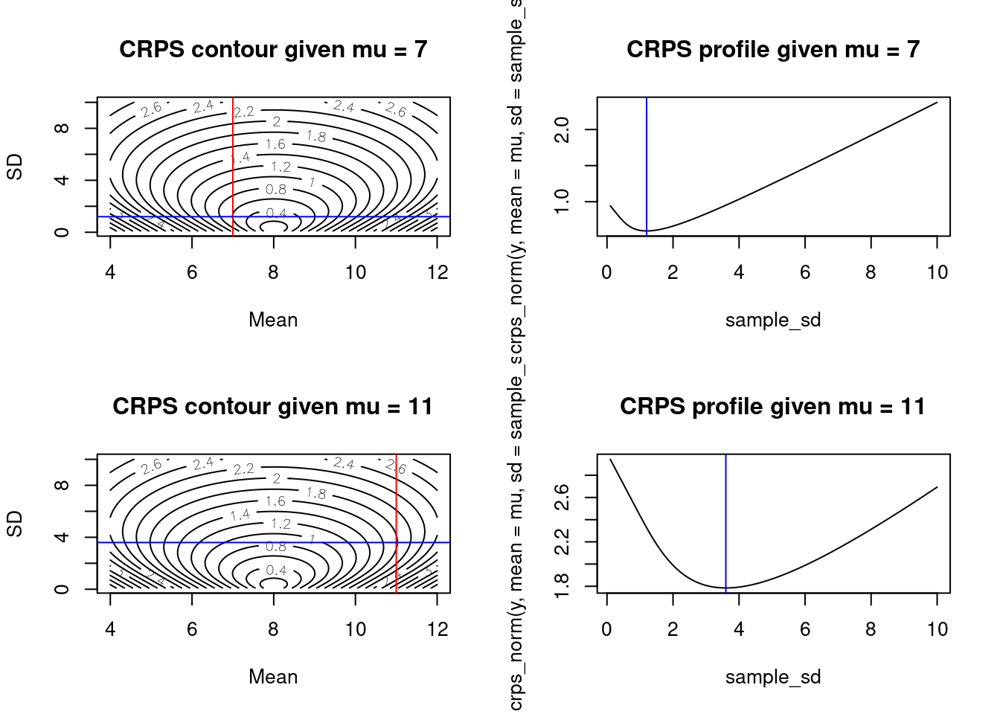

score_df <- neon4cast::combined_scores(x = "phenology")8 How did my forecast perform?
Forecasts will be evaluated at each site and forecast horizon (i.e., time-step into the future), and a summary score will be assigned evaluating overall performance of all forecast submissions across sites. Forecasts will also be compared to a null model.
8.1 Forecast Submission Visualization
The dashboard shows the forecast submissions by each team for each forecast theme by date and forecast variable.
8.2 Evaluation
Preliminary results will be distributed using the neon4cast::combined_scores(x) function (where x is an optional argument that is the theme name).
We intend to write a joint manuscript synthesizing forecasts, authorship will be extended to members of each team with an opt-in policy. Teams are welcome to publish results from their model at any time. If a publication is generated we encourage the manuscript to acknowledge the Ecological Forecasting Research Coordination Network and its support from the National Science Foundation (DEB-1926388).
8.3 Scoring Metric: Continuous Ranked Probability Score
Forecasts will be scored using the continuous ranked probability score (CRPS), a proper scoring rule for evaluating forecasts presented as distributions or ensembles (Gneiting & Raftery 2007). The CRPS compares the forecast probability distribution to that of the validation observation and assigns a score based on both the accuracy and precision of the forecast. We will use the ‘crps_sample’ function from the scoringRules package in R to calculate the CRPS for each forecast.
We will generate a combined score for all locations and forecast horizons. Forecasts will also be evaluated using the CRPS at each time-step in the forecast horizon and each location included in the forecasts.
Importantly, we use the convention for CRPS where zero is lowest and best possible score, therefore teams want to achieve the lowest score. CPRS can be also expressed as a negative number with zero as highest and best possible score (Gneiting & Raftery 2007). The scoringRules package that we use follows the 0 or greater convention.
8.3.1 Example of a CRPS calculation from an ensemble forecast
The following uses Equation 2 in Jordan, Kruger, and Lerch 2018

First, create a random sample from a probability distribution. This is the “forecast” for a particular point in time. For simplicity, we will use a normal distribution with a mean of 8 and standard deviation of 1
x <- rnorm(1000, mean = 8, sd = 1.0)Second, we have our data point (i.e., the target). We will set it to zero as well
y <- 8Now calculate CRPS using Equation 2
s <- 0
for(i in 1:length(x)){
for(j in 1:length(x)){
s <- s + abs(x[i] - x[j])
}
}
crps_equation_2 <- mean(abs(x - y)) - s / (2 * length(x)^2)
crps_equation_2[1] 0.2351571Now calculate using the crps_sample() function in the scoringRules package
crps_sample(y = y, dat = x)[1] 0.23515718.3.2 Exploring the scoring surface
Now lets see how the CRPS changes as the mean and standard deviation of the forecasted distribution change
First, set vectors for the different mean and SD values we want to explore
sample_mean <- seq(4, 12, 0.1)
sample_sd <- seq(0.1, 10, 0.1)Second, set our observed value to 8 for simplicity
y <- 8Now calculate the CRPS at each combination of forest mean and SD
combined <- array(NA, dim = c(length(sample_mean), length(sample_sd)))
for(i in 1:length(sample_mean)){
for(j in 1:length(sample_sd)){
sample <- rnorm(10000, sample_mean[i], sample_sd[j])
combined[i, j] <- crps_sample(y = y, dat = sample)
}
}Finally, visualize the scoring surface with the observed value represented by the red line
contour(x = sample_mean, y = sample_sd, z = as.matrix(combined),nlevels = 20, xlab = "Mean", ylab = "SD")
abline(v = y, col = "red")
The contour surface highlights the trade-off between the mean and standard deviation.
8.3.3 CRPS from the Normal Distribution
If the distributional forecast is a normal distribution represented by a mean \(\mu\) and standard deviation \(\sigma\), an ensemble of predictions is not needed to evaluate CRPS because we can take advantage of the analytic solution to CRPS under the normal assumption (Equation 4 from Gneiting et al. 2005)
Equation 5 from Gneiting et al. (2005) gives
\[\begin{align*} CRPS(N(\mu, \sigma^2) | y) = \sigma \left( \frac{y - \mu}{\sigma} \left( 2 \Phi\left( \frac{y - \mu}{\sigma} \right) - 1 \right) + 2 \phi \left( \frac{y - \mu}{\sigma} \right) - \frac{1}{\sqrt{\pi}} \right) \end{align*}\]
for \(\Phi(\cdot)\) and \(\phi(\cdot)\) the standard normal CDF and PDF, respectively. Therefore, if the forecast distribution is truly a normal distribution (often this isn’t true in forecasts that only report a mean and sd) a simplified score can be applied as follows:
sample_mean <- seq(4, 12, 0.1)
sample_sd <- seq(0.1, 10, 0.1)
combined_norm <- array(NA, dim = c(length(sample_mean), length(sample_sd)))
for(i in 1:length(sample_mean)){
for(j in 1:length(sample_sd)){
combined_norm[i, j] <- crps_norm(y = y, mean = sample_mean[i], sd = sample_sd[j])
}
}Finally, visualize the scoring surface with the observed value represented by the red line.
contour(x = sample_mean, y = sample_sd, z = as.matrix(combined_norm), nlevels = 20, xlab = "Mean", ylab = "SD")
abline(v = y, col = "red")Note that at a given value of the sd, the lowest score is achieved at \(\mu = y\) as shown for each of the blue lines where the minimum value of the score across each blue line is at the red line. This behavior makes sense because the CRPS is a score that rewards accuracy and precision. Thus, for any given level of precision (represented by the standard deviation), CRPS is optimized by producing the most accurate prediction of the distribution’s location.
contour(x = sample_mean, y = sample_sd, z = as.matrix(combined_norm), nlevels = 20, xlab = "Mean", ylab = "SD")
abline(v = y, col = "red")
abline(h = 2.5, col = "blue")
abline(h = 4.3, col = "blue")
abline(h = 6.8, col = "blue")
Interestingly, for a given mean \(\mu \neq y\) we find a pattern that makes intuitive sense given the goal of CRPS to produce forecasts that are both accurate and precise. For a given amount of bias in the prediction (i.e., given a \(\mu \neq y\)), the optimal score is achieved by a standard deviation that slightly larger than the bias.
layout(matrix(1:4, 2, 2, byrow = TRUE))
## plots for mu = 7
mu <- 7
contour(x = sample_mean, y = sample_sd, z = as.matrix(combined_norm), nlevels = 20, xlab = "Mean", ylab = "SD", main = paste0("CRPS contour given mu = ", mu))
abline(v = mu, col = "red")
min_sd <- sample_sd[which.min(crps_norm(y, mean = mu, sd = sample_sd))]
abline(h = min_sd, col = "blue")
plot(sample_sd, crps_norm(y, mean = mu, sd = sample_sd), type = 'l', main = paste0("CRPS profile given mu = ", mu))
abline(v = min_sd, col = "blue")
## plots for mu = 11
mu <- 11
contour(x = sample_mean, y = sample_sd, z = as.matrix(combined_norm), nlevels = 20, xlab = "Mean", ylab = "SD", main = paste0("CRPS contour given mu = ", mu))
abline(v = mu, col = "red")
min_sd <- sample_sd[which.min(crps_norm(y, mean = mu, sd = sample_sd))]
abline(h = min_sd, col = "blue")
plot(sample_sd, crps_norm(y, mean = mu, sd = sample_sd), type = 'l', main = paste0("CRPS profile given mu = ", mu))
abline(v = min_sd, col = "blue")
Next, we plot the relationship between a given value of \(\mu\) and the \(\sigma\) that produces the optimal CRPS. This looks like a linear relationship.
optimal_sd <- rep(0, length(sample_mean))
for (i in 1:length(sample_mean)) {
optimal_sd[i] <- sample_sd[which.min(crps_norm(y, mean = sample_mean[i], sd = sample_sd))]
}
plot(sample_mean, optimal_sd, type = 'l')
Let’s estimate the slope of the relationship. It looks like the optimal \(sd\) for a normal distribution forecast that is biased by \(|y - \mu|\) is \(sd = 1.2|y - \mu|\) which makes sense as this would put the true value in a region of high probability.
coef(lm(optimal_sd[sample_mean > 0] ~ sample_mean[sample_mean > 0])) (Intercept) sample_mean[sample_mean > 0]
2.430864e+00 -1.688326e-16 8.4 Null forecast
All forecasts will be compared to a null forecast produced by a simple historical-means calculation or a random walk. The GitHub repository for each theme has the code for the null model.
Ticks: https://github.com/eco4cast/neon4cast-ticks/blob/master/03_nullFitAndForecast.R
Terrestrial (Daily): https://github.com/eco4cast/neon4cast-terrestrial/blob/master/03_terrestrial_flux_daily_null.R
Terrestrial (30 minute): https://github.com/eco4cast/neon4cast-terrestrial/blob/master/04_terrestrial_flux_30min_clim.R
Beetles: https://github.com/eco4cast/neon4cast-beetles/blob/master/03_forecast.R
Aquatics: https://github.com/eco4cast/neon4cast-aquatics/blob/master/03_generate_null_forecast_aquatics.R
Phenology: https://github.com/eco4cast/neon4cast-phenology/blob/master/nullModel_randomWalk_main.R
8.5 References
Gneiting, T., A.E. Raftery. 2007. Strictly proper scoring rules, prediction, and estimation. Journal of the American Statistical Association, 102(477): 359–378. https://doi.org/10.1198/016214506000001437
Jordan, A., F. Kruger, and S. Lerch 2018. Evaluating probabilistic forecasts with scoringRules. https://cran.r-project.org/web/packages/scoringRules/vignettes/article.pdf
Gneiting, T., A.E. Raftery, A.H. Westveld III, T. Goldman. 2005. Calibrated probabilistic forecasting using ensemble model output statistics and minimum CRPS estimation. Monthly Weather Review, 133(5): 1098-1118. https://doi.org/10.1175/MWR2904.1